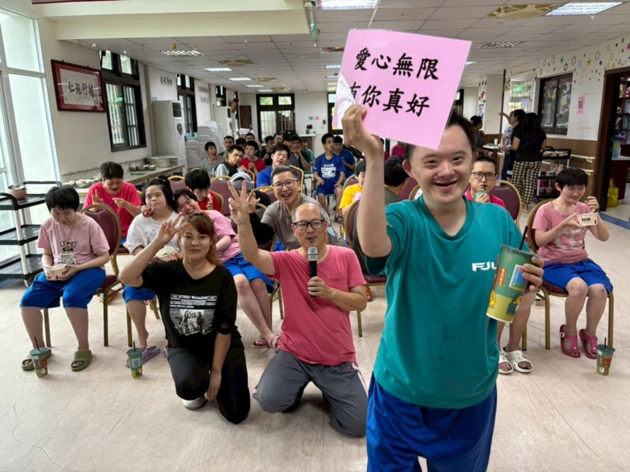
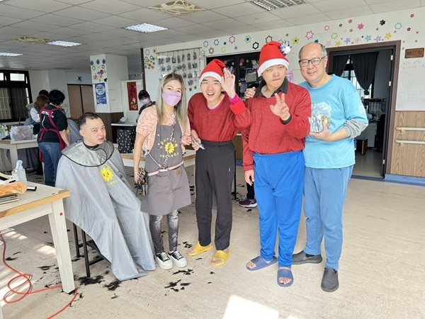
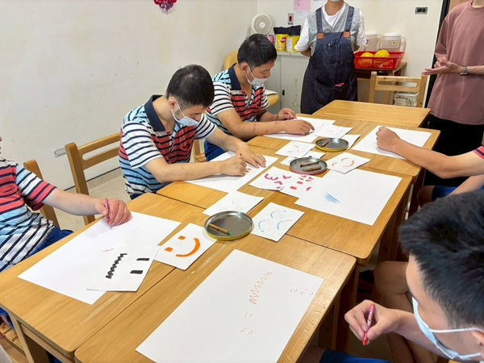
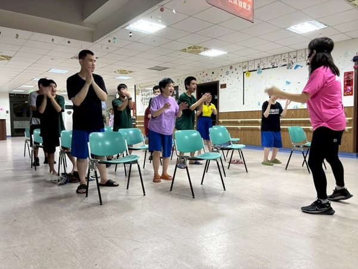

我們致力成為溪北地區重要的身心障礙照護據點，提供溫暖的照護環境與完善的支持資源，有效減輕家庭照顧壓力，成為您最堅實的後盾。
認識柏拉圖柏拉圖復康之家不僅是一個照護空間，更是一個充滿愛與支持的大家庭。在這裡，每一位服務對象都能獲得專屬的成長與快樂。
透過團體課程與志工活動的引導，我們鼓勵住民勇敢表達自我、與同儕建立深厚的友誼。看著他們在鏡頭前自信比出「YA」的燦爛笑容，就是我們最大的成就感。我們深信，溫暖的陪伴是最好的復健良藥。


24小時全天候安全照護，搭配營養團隊調配膳食，打造如家一般的溫暖避風港。

規劃多元化日間課程延緩退化，透過生活技能訓練，重建服務對象的獨立與自信。

專業治療師介入維持身體機能，結合豐富節慶與休閒活動，全面促進身心靈健康。
機構的穩定運作，仰賴社會各界善心人士與團體的無私奉獻。感謝每一位走進柏拉圖的夥伴，為住民帶來實質的物資與精神的慰藉。
歡迎追蹤柏拉圖復康之家的 Facebook 粉絲專頁！
我們將不定期分享住民的溫馨日常、復健進度、節慶活動以及志工招募等最新資訊。您的每一個「讚」與「分享」，都是給予我們服務對象最大的支持與鼓勵。
每一筆捐款、每一次的關注，都能化作實質的照護資源。我們承諾每一分善款都將透明公開，妥善運用於服務對象的生活改善與醫療復健上。